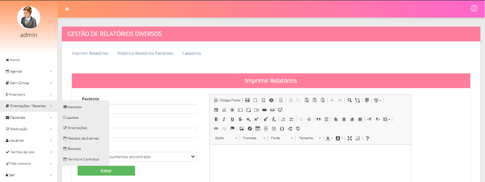

Orientações, Receitas e laudos
Basta clicar no item que deseja cadastrar, clicar em novo, digitar um título, digitar o corpo do documento e clicar em salvar.
Obs: Se você já tiver o documento em um arquivo word em seu computador, basta abrir o arquivo, copiar e colar dentro do sistema.
Para destinar um atestado, laudo, orientação, exame ou receita para um paciente, basta clicar no botão “Imprimir ...” escolher a paciente, escolher o tipo de documento, clicar em editar, fazer as alterações necessárias e clicar em imprimir.
Na aba exames existe também a opção de check list onde você seleciona a paciente, seleciona os exames que deseja e clica em imprimir.
Em Histórico de pedidos é possível listar tudo que foi destinado a paciente, basta digitar o nome dela e clicar em pesquisar
Voltar ao menu do Administrador